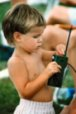

We've moved! Please visit our new site at https://bloomingtonradio.club!
Hello and welcome to the Bloomington Amateur Radio Club (BARC), club callsign K9DIY. We are a club of Amateur Radio Operators living, working, and operating in and around Bloomington, Indiana, USA.
- Engaged in Monroe County emergency preparedness
- Engaged in local weather spotting and working with NWS
- Over 30 members, from novices to experts
- Delivers VE testing on behalf of FCC/ARRL
- Engaged in local activities such as the Hilly Hundred and the Indiana Science Olympiad as ARES activities
-

Whether you are new to amateur (ham) radio, a seasoned ham, someone interested in amateur radio who has moved to Bloomington or Monroe County recently, or just want to learn about ham radio, join us, your local amateur radio community. BARC is a friendly group of hams who are ready at a moment's notice to provide reliable communications and form an integral part of Monroe County emergency preparedness plan. Since Indiana is located toward the tail end of the tornado alley, many local hams are also trained weather spotters and assist the National Weather Service (NWS) with "ground truths" when we are hit by severe weather.
Come join us and participate in many fun as well as serious activities BARC engages in each year. Some examples are:
> Providing communications for events such as the Indiana Science Olympiad, Hilly Hundred Bicycle Ride
> Teaching kids about Ham Radio at Wonderlab
> Field Day
> Weekly Nets
> Search and Rescue
> HF Contests
> Sponsoring the Bloomington Hamfest
> Annual Christmas Party!Kids can get in too. Here are 22 Things You can Do with Ham Radio.